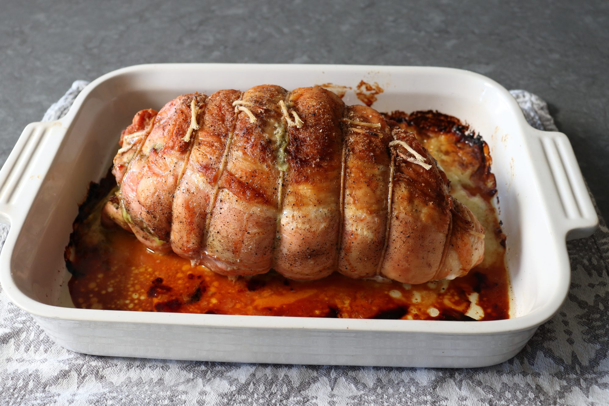

Turkey Cordon Bleu

Description
This roast turkey "Cordon Bleu" is one of those recipes that looks and sounds kind of fancy but is actually very simple and straightforward to make. Beyond the visual appeal, this technique produces something much more flavorful than even the most perfectly roasted bird, which for me is the main selling point. Plus, you get to tweak the filling ingredients any way you want. So, whether this is your first or second turkey of the season, I really do hope you give this a try soon. Enjoy!
Ingredients
- 1 teaspoon vegetabl oil
- 4 pound boneless, skin-on turkey breast
- 2 teaspoons kosher salt
- 1 teaspoon black pepper
- Pinch of cayenne pepper
- 2 tablespoons dijon mustard
- 2 tablespoons prepared peso sauce
- 4 ounces ham,thinly sliced
- 5 slices provolone cheese
Steps
- Preheat the oven to 350 degrees F (175 degrees C). Grease a baking dish with vegetable oil.
- Place turkey breast, skin-side down, on a work surface. Open it up and trim off any connective tissue. Cut at an angle along the natural seam of the turkey and butterfly it open so it's all about the same thickness; don't cut all the way through.
- Season turkey breast with 1 teaspoon salt, ½ teaspoon pepper, and cayenne. Spread Dijon over the surface and then spread pesto over that. Scatter dried cranberries over top, then layer with ham and provolone cheese.
- Roll turkey breast from one side to the other to enclose the filling, and flip so the skin is facing up. Tie around the center with a kitchen string to secure. Repeat ties at 1-inch intervals along the length of the roast all the way to each end. Transfer to the prepared baking dish. Season the top and sides with remaining salt and pepper.
- Roast in the center of the preheated oven until internal temperature reaches 145 degrees F (65 degrees C), 1 ½ to 2 hours.
- Remove from the oven and let rest for at least 15 to 20 minutes. Cut off strings and slice.